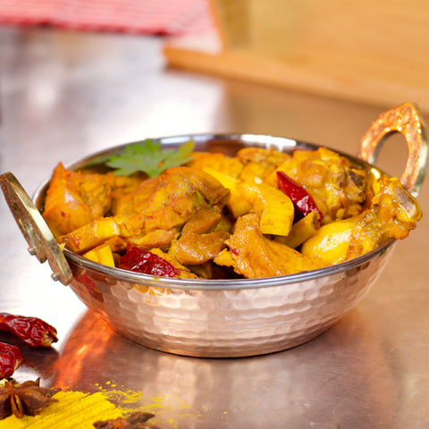

Mutton pallipalayam

A must try Erode special !!
Ingredients:
- 250 gm mutton
- 2 tsp oil
- 1 tsp mustard seeds
- 1 stick curry leaves
- 2 dry red chilies or more if needed
- 2 tbsp coconut bits
- 1/2 cup chopped shallots / chinna vengayam
- 1/4 tsp turmeric powder
- 1 tsp coriander powder - optional
- 1 tbsp coriander leaves - chopped
- 1 tbsp ginger garlic paste
Instructions:
- Clean and wash mutton pieces.
Pressure cook mutton with 1/2 cup water for 10 whistles.
Remove from the heat and allow to cool. Keep it aside.
Heat oil in a pan or kadhai.
Temper mustard seeds, curry leaves and broken red chilies.
-
Add chopped coconut bits and cook till it turns olden brown.
Now, add shallots and cook for a while.
Add cooked mutton along with the water. Give a stir.
Now, add ginger garlic paste and stir well. Add turmeric powder, coriander powder and salt to taste.
-
Mix well everything and cook it covered on low medium flame for 5-8 minutes.
Add 2-3 tbsp water and cook again till mutton is well cooked and raw smell goes.
Garnish with chopped coriander leaves and serve hot.